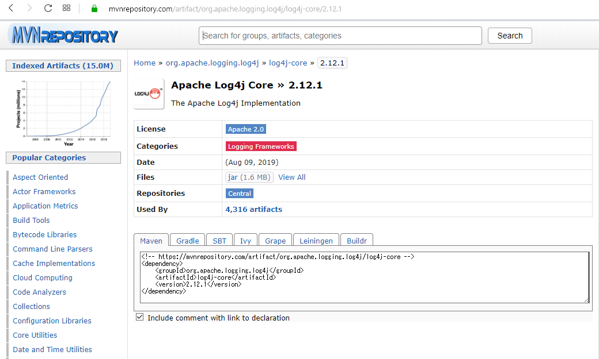
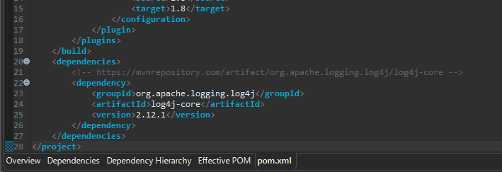
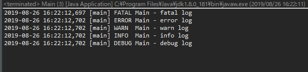
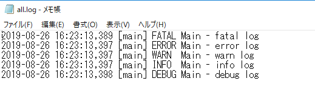
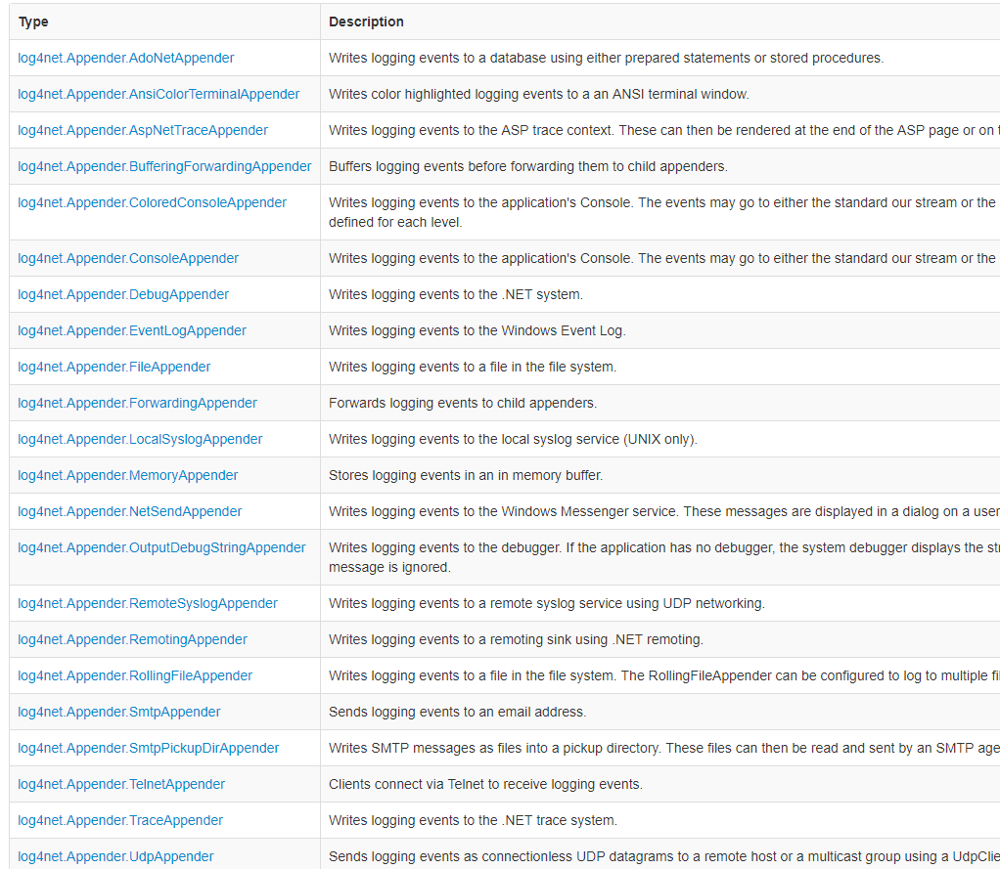

[Java] ログライブラリ(log4j)を使う方法
こんにちは。明月です。
この投稿はJavaで使うログライブラリ(log4j)を使う方法に関する説明です。
ログということはプログラム開発する時にデータ追跡や呼出されたクラスや関数、エラー確認などを調べるため使うライブラリです。
普通に開発する時にはIDEツールを利用してデバックすればデータ追跡ができますが、開発が終わってプログラムをコンパイルやビルドした後、Productionにリリースになったらデータ追跡することはしやすくないです。
でも、完璧なプログラムなら問題ないですが、人間が作ったプログラムなのでバグが必ずあるし、そのバグによって間違い演算してエラーが発生します。エラーが発生する時にデータを追跡ができなければならないですが、それがログ機能によってデータを探せるのができます。
Javaではログライブラリが様々がありますが、その中でlog4jが一番簡単だし、楽なライブラリだと思います。
ログはただエラー追跡だけではなく、ユーザアクションパターンやシステムメモリパターンなどを追跡して様々に統計データを活用することができます。
Javaでlog4jを使うためにmavenレポジトリを通ってlog4jライブラリを連携しなければならないです。
repository - https://mvnrepository.com/artifact/org.apache.logging.log4j/log4j-core/2.13.1

<!-- https://mvnrepository.com/artifact/org.apache.logging.log4j/log4j-core -->
<dependency>
<groupId>org.apache.logging.log4j</groupId>
<artifactId>log4j-core</artifactId>
<version>2.13.1</version>
</dependency>

実際にプログラムの中で作成しましょう。
import java.io.FileNotFoundException;
import java.io.IOException;
import org.apache.logging.log4j.LogManager;
import org.apache.logging.log4j.Logger;
import org.apache.logging.log4j.core.config.xml.XmlConfigurationFactory;
public class Main {
// 実行関数
public static void main(String[] args) throws FileNotFoundException, IOException {
// log4j.xmlファイル設定する。
System.setProperty(XmlConfigurationFactory.CONFIGURATION_FILE_PROPERTY,"d:\\log4j.xml");
// ログマネージャーを取得する。
Logger logger = (Logger) LogManager.getLogger(Main.class);
// ログレベルで作成
// 致命的なエラーを作成
logger.fatal("fatal log");
// 一般エラーを作成
logger.error("error log");
// 警告を作成
logger.warn("warn log");
// 一般ログを作成
logger.info("info log");
// デバックログを作成
logger.debug("debug log");
}
}
<?xml version="1.0" encoding="UTF-8"?>
<configuration>
<appenders>
<!-- コンソールログ設定 -->
<Console name="console" target="SYSTEM_OUT">
<!-- ログ作成パターン設定 -->
<!-- %dは時間、%tは関数名、%pはログレベル、%cはクラス、%mはメッセージ内容%nは改行 -->
<PatternLayout pattern="%d [%t] %-5p %c - %m%n" />
</Console>
<!-- ファイルログ設定 -->
<!-- ファイルログパス設定 - filename、ファイル名パターン - filePattern -->
<RollingFile name="file" fileName="d:\logs\all.log" filePattern="./logs/all.%i.%d{yyyy-MM-dd}.log">
<!-- ログ作成パターン設定 -->
<!-- %dは時間、%tは関数名、%pはログレベル、%cはクラス、%mはメッセージ内容%nは改行 -->
<PatternLayout pattern="%d [%t] %-5p %c - %m%n" />
<!-- ログ限界ファイルサイズ設定、限界サイズに届くとファイルを切り替え -->
<Policies>
<SizeBasedTriggeringPolicy size="10MB" />
</Policies>
<!-- 切り替えファイル個数、超えたら削除 -->
<DefaultRolloverStrategy max="1000" fileIndex="min" />
</RollingFile>
</appenders>
<!-- ログレベル設定 -->
<loggers>
<!-- 全体ログ設定 -->
<root level="ALL">
<!-- consoleログ設定 -->
<appender-ref ref="console" />
<!-- ファイルログ設定 -->
<appender-ref ref="file" />
</root>
</loggers>
</configuration>


link - https://logging.apache.org/log4j/2.0/manual/api.html
log4jはConsoleやファイルログ以外にメール送信、データベース設定などがあります。設定によって追加することができます。

link - https://logging.apache.org/log4net/release/manual/configuration.html
ここまでJavaで使うログライブラリ(log4j)を使う方法に関する説明でした。
ご不明なところや間違いところがあればコメントしてください。
- [Java] 日付フォーマット(SimpleDateFormat)を使う方法2020/03/25 00:36:53
- [Java] サーブレット(Servlet)の環境でファイルアップロード(プログレスバーでファイルアップロード状態を表示する方法)する方法2020/03/24 00:48:21
- [Java] Spring環境でファイルアップロード(プログレスバーでファイルアップロード状態を表示する方法)する方法2020/03/22 23:15:12
- [Java] FTPに接続してファイルをダウンロード、アップロードする方法(FTPClient)2020/03/20 02:44:36
- [Java] JSPのSpring環境でschedulerのcronを使う方法2020/03/18 00:24:32
- [Java] POIを利用してExcelを扱う方法2020/03/17 01:48:00
- [Java] PDFを出力する方法(itextpdf)2020/03/13 00:47:31
- [Java] ログライブラリ(log4j)を使う方法2020/03/12 00:54:39
- [Java] Jsonタイプのデータを使う方法(Gsonライブラリ)2020/03/11 00:30:15
- [Java] Base64をエンコード、デコードする方法2020/03/09 10:24:01
- [Java] cmdコマンドを実行するための方法2020/03/06 18:01:10
- [Java] メール(javax.mail)を発送する方法2020/03/05 20:07:49
- [Java] クラス複製(Clonable, Reflection)2020/03/05 00:03:19
- [Java] シリアライズ(直列化: Serializable)2020/03/03 00:03:33
- [Java] StringBuilderとStringBufferの差異2020/03/02 07:52:22
- [Design Pattern] デザインパターンの紹介2021/06/08 20:42:36
- [Tools] Dbeaver(無料Sql queryブラウザツール)2021/04/28 18:26:49
- [Bootstrap] HTMLデザインのフレームワークのBootstrap紹介2020/07/30 19:06:36
- [Python] メール(smtplib)を送信する方法2020/07/27 18:38:43
- [Python] HttpConnection(requestsモジュール)でウェブサーバーで接続する方法2020/07/20 14:41:51
- [Python] Excel(openpyxl)を扱う方法2020/07/16 16:40:31
- [Python] ファイル圧縮、解凍(zipfile)する方法2020/07/14 19:14:22
- [Python] Apache cgiでPythonを使う方法2020/07/09 19:58:19
- [Python] Web serverを起動する方法(http.server)2020/07/09 00:13:13
- [Python] WebSocketを使う方法2020/07/07 17:29:18
- [Python] PythonとJavaのソケット通信する方法2020/07/03 18:35:50
- [Python] PythonとC#のソケット通信2020/07/01 19:28:22
- [Python] INI(環境設定ファイル)を扱う方法2020/06/30 18:26:01
- [Python] Jsonを扱う方法2020/06/29 19:18:15
- [Python] XMLファイルを扱う方法2020/06/26 19:18:14